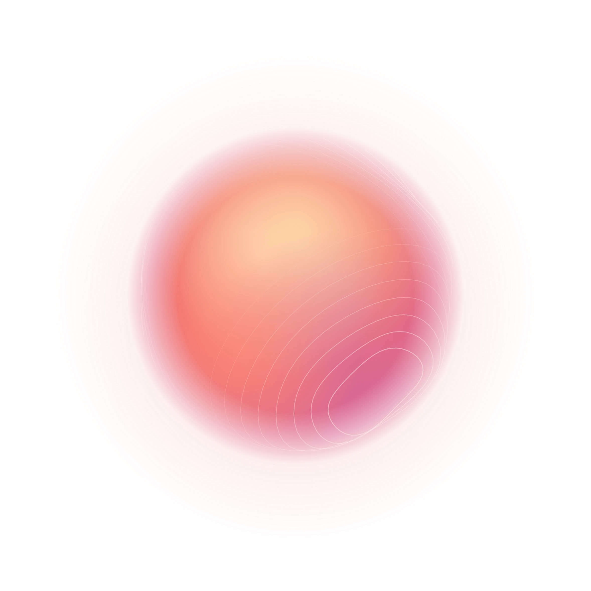
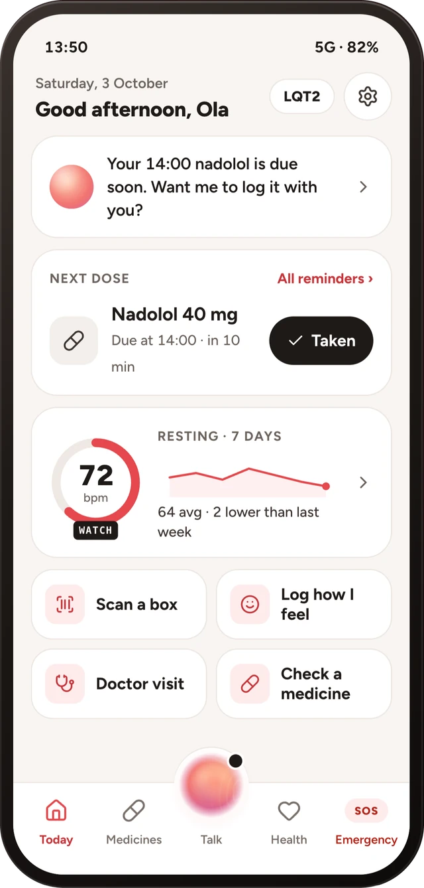
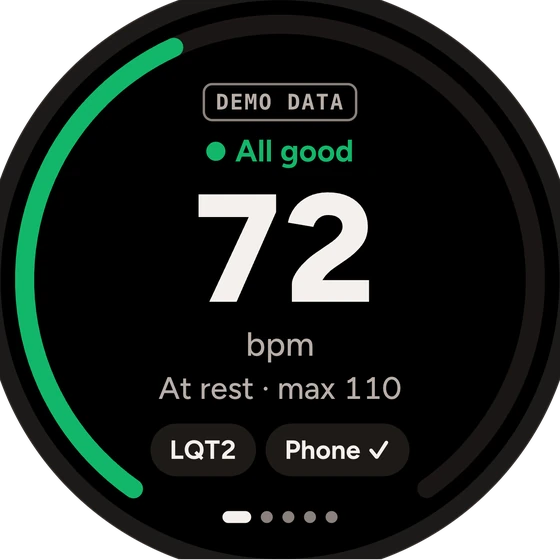
Known riskKlacid → clarithromycin Limits tuned for trainingHackYeah 2026 · Sport & Healthcare
Celia.ai
Stay active.
Ask before you take it.
A heart-safety agent that lets people with Long QT syndrome keep moving. It checks every medicine, watches the heart on the wrist through training and sleep, and speaks for you in an emergency.
Native HarmonyOS, phone + watch · by Double Oreo
The problem
1 in 2,000 people have Long QT syndrome.
Their heart takes longer to recharge between beats. A hard sprint, a swim, an ordinary antibiotic or a sudden alarm can tip it into a rhythm that stops it. Most look healthy, and many simply stop moving out of fear.
Each dot is one person · ● one has LQTS
The hidden trigger
250+
medicines can lengthen the QT. Harmless for most people; for them, possibly the last prescription.
Three types
Effort · Startle · Sleep
LQT1 swimming, LQT2 an alarm clock, LQT3 a slow heart at night.
Sport, with a plan
ESC 2020
guidelines let many treated patients keep playing. Between check-ups, nothing watches.
Time to act
4–6 min
without CPR. A coach or teammate is often the first one there.
The solution
One companion, from the pitch to the doctor's office.
Check a medicine, open the card, log a symptom or a dose, hands-free and without opening the app.
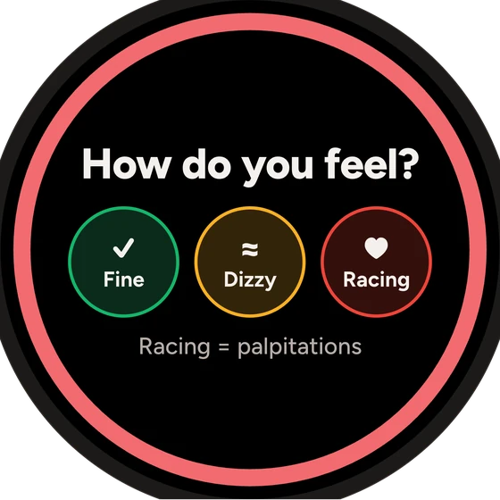
Watch
Heart rate in training and sleep, SOS
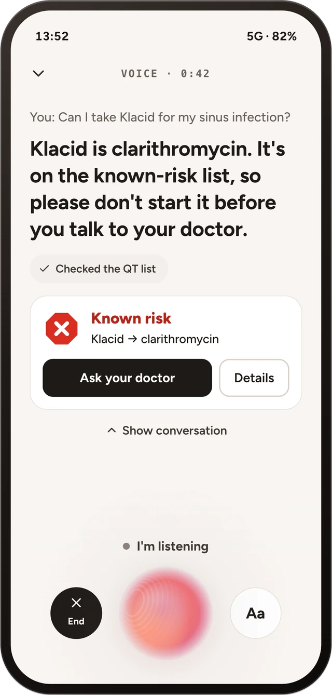
Phone
Talk, check, remember, remind
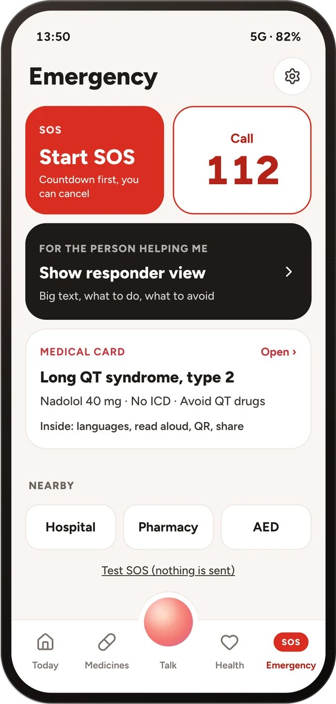
Emergency
SOS, a card by QR in 13 languages, Live View
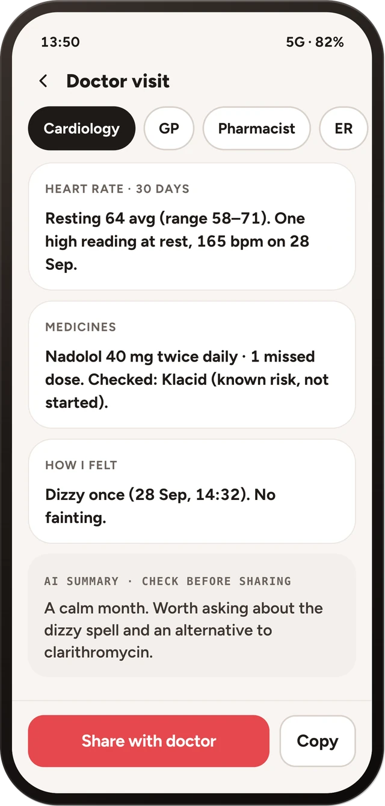
Doctor visit
A one-page safety brief, shared by link
Sport, without the fear
The watch knows when you train, and moves your limits with you.
One evening run · LQT1 profile
Heart rate Your limit
Accelerometer and steps tell rest, training and sleep apart. Each has its own limit.
LQT1 lower while active, LQT2 lower at rest, LQT3 an earlier low alarm. A risky medicine tightens all of them for 72 h.
Peak against 60 s after you stop. A drop under 12 bpm is flagged.
Hard impact, then stillness: “Are you OK?” for 30 s, then SOS with your location.
Medicine check + agent
Verdicts come from fixed data. The AI only explains.
- 1Type it, scan it, photograph it or say it
At the pharmacy, the gym or abroad. Barcode to ingredient for ~68k Polish packs.
- 2The medicine list decides
137 medicines, brand → ingredient, combination rules. Offline. Same medicine, same answer.
- 3The AI explains, and is checked
Plain words and safer options to ask about. Text that contradicts the verdict is thrown away.
In the kit bag, from the dataset
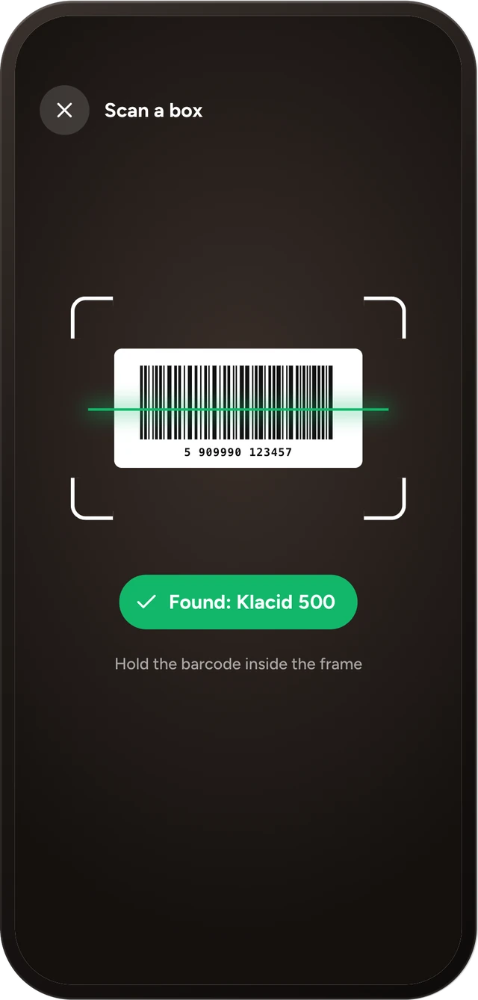
01 · Scan
Point at the barcode.
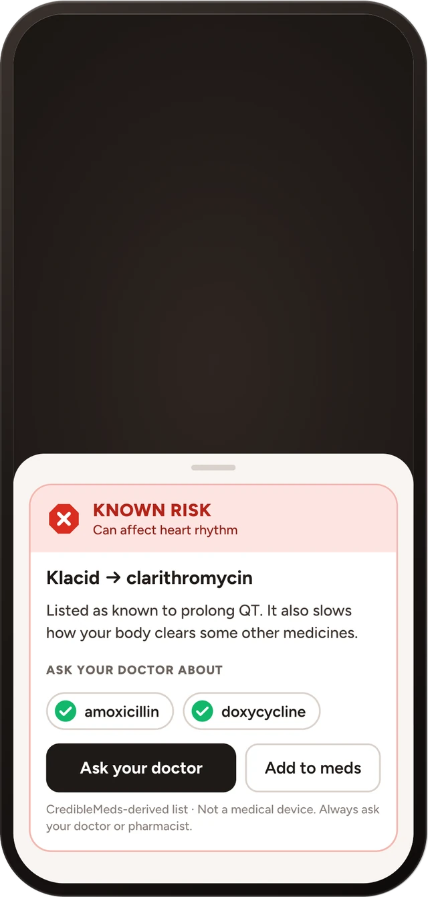
02 · Verdict
Colour, shape and word.
03 · Talk
The agent says it plainly.
See it working
Demo
Recorded on the HarmonyOS emulator (API 20) and a Huawei watch. Simulated heart data is labelled SIMULATED on screen.
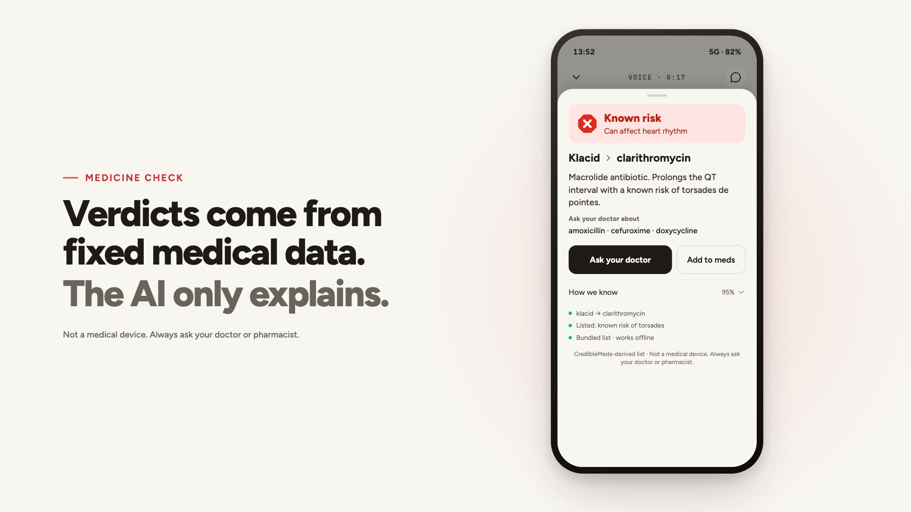
Click to play · 1:12Video embedded in this PDF · also demo.mp4On the wrist, and on the bad day
A question first, a siren only if you don't answer.
A native HarmonyOS watch app. Limits follow your genotype and whether you rest, train or sleep. When you can't explain, the card does.
01 · Calm
All good
Inside your own limits.
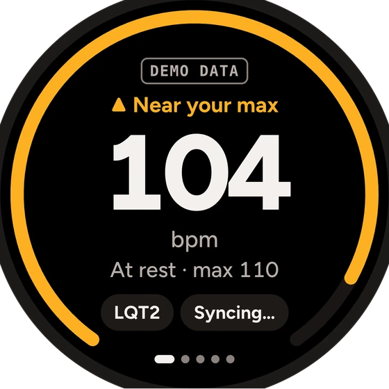
02 · Closer
Near your max
Amber before red.
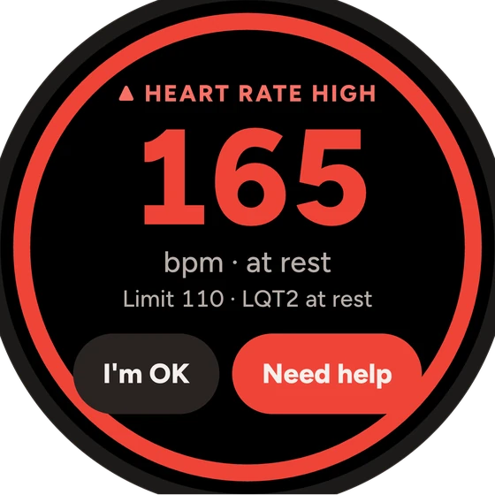
03 · Alert
Racing at rest
“I'm OK” or “Need help”.
04 · Check-in
How do you feel?
One tap answers.
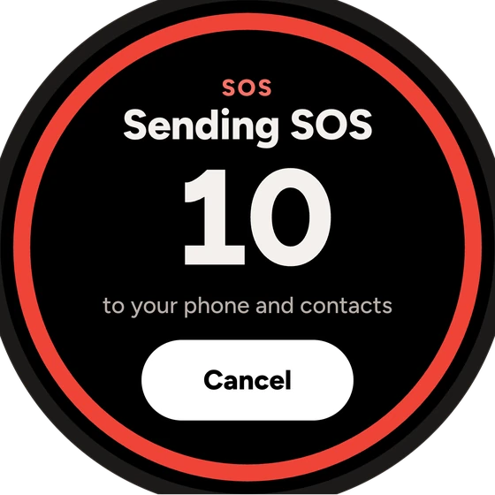
05 · No answer
SOS countdown
10 seconds to cancel.
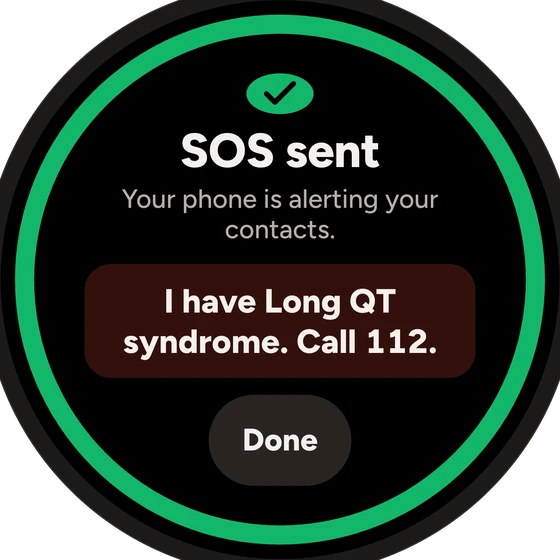
06 · Help
SOS sent
Tells a bystander what to do.
After a fall or a racing heart with no answer. Also on the lock screen.
By QR on anyone's phone, no app. Written in advance, never machine-guessed.
Three steps, a call button and a CPR metronome at 110 a minute.
Designed for the bad dayNo signal: check, card and offline agent still work · Watch drops: no stale numbers · No location: SOS still goes
Market + fit
A group nobody builds for, and an engine that scales past it.
- + their families. Each first-degree relative has a 1 in 2 chance of carrying the gene.
- + the same engine, new data. Brugada and CPVT, and anyone prescribed a QT-prolonging drug.
What exists today, and the gap
| Celia.ai | QT drug lists | ECG wearables | Smartwatch health | Pill reminders | |
|---|---|---|---|---|---|
| Check a medicine by brand or barcode | ● | ◐ | – | – | ◐ |
| Heart rate limits by genotype and activity | ● | – | – | ◐ | – |
| Recovery after exercise, for LQTS | ● | – | – | ◐ | – |
| Emergency card, SOS, bystander guide | ● | – | – | ◐ | – |
| Explains in plain words, by voice | ● | – | – | – | – |
| Doctor brief between visits | ● | – | ◐ | ◐ | – |
● yes · ◐ partly, generic or not LQTS-specific · – no
Sport is back on the table for treated patients (ESC 2020). A heart-rate sensor is already on millions of wrists. Agents like Celia can now answer “can I take this?” by voice, if the answer comes from fixed data.
Business model + go-to-market
Safety stays free. The care around it pays.
Free
The safety coreMedicine check, emergency card, SOS, watch alerts, coach. Never behind a paywall.
€4.99 / month
Celia+Family view of heart status, long history and trends, unlimited doctor briefs, cloud voice agent.
€2 / person / month
Care and team licenceClinics: brief inbox and adherence between visits. Clubs: coach view and the roster's emergency cards.
Go-to-market
Patients onboarded by their cardiologist; AppGallery launch; feedback from the LQTS patient community.
EU MDR (expected class IIa), ISO 13485, a validation study of the verdicts. Clinic licences start.
13-language card opens the EU. Sports clubs and federations. Brugada and CPVT datasets.

Double Oreo
Kaloyan
The agent and voice
Georgi
The app and emergency
Mark
Data and the watch
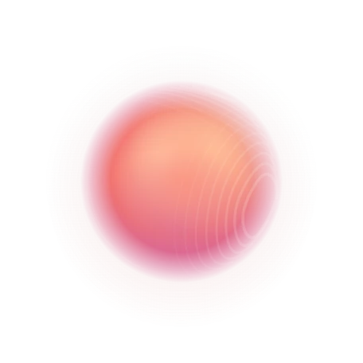
Ask before
you take it.